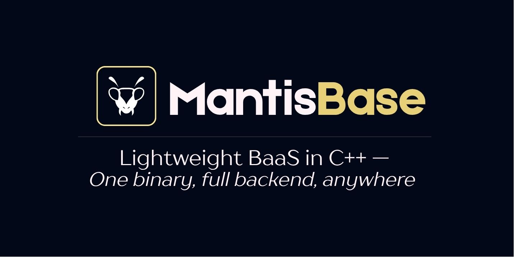

A self-hosted C++20 BaaS — one binary, instant REST APIs, auth, realtime, and an admin dashboard.
Installation
Pre-built Binary
- Download the latest release from GitHub Releases
- Extract and run:
The server starts on http://localhost:7070.
Linux dependencies:
Build from Source
See Installation Guide for more details.
First Steps
1. Create an Admin Account
2. Access the Admin Dashboard
Open http://localhost:7070/mb and log in with your admin credentials.
The dashboard lets you create entities, manage records and schemas, configure access rules, and upload files — all without writing API calls.

3. Create Your First Entity
Using the Admin Dashboard (recommended): navigate to Schemas, click New, and fill in the name, fields, and access rules.
Using the API:
4. Use Your Auto-generated API
Authentication
See Authentication API for refresh, logout, API keys, and OAuth.
Access Control
Each entity defines per-operation access rules:
| Mode | Description |
|---|---|
"public" | Open to everyone |
"auth" | Any authenticated user |
"" (empty) | Admin only |
"custom" | JavaScript expression — e.g. auth.id == req.body.author_id |
See Access Rules for details.
File Uploads
Serve files at GET /api/v1/files/posts/<filename>. See File Handling.
Configuration
Set MB_JWT_SECRET in production. See CLI Reference for all options.
Next Steps
- API Reference — All endpoints, schema management, realtime SSE and WebSocket
- Authentication API — Auth endpoints, API keys, OAuth
- Access Rules — Permission system
- File Handling — Upload, serve, and delete files
- Embedding Guide — Use MantisBase as a C++ library
- Scripting Guide — JavaScript extensions for custom routes
- Docker Guide — Container deployment
Documentation
- Installation Guide — Detailed installation instructions
- CLI Reference — All command-line options
- API Reference — Complete API documentation
- Authentication API — Auth endpoints and usage
- Access Rules — Permission system guide
- Embedding Guide — Use as a C++ library
- File Handling — File upload and serving
- Scripting Guide — JavaScript extensions
- Docker Guide — Running in containers